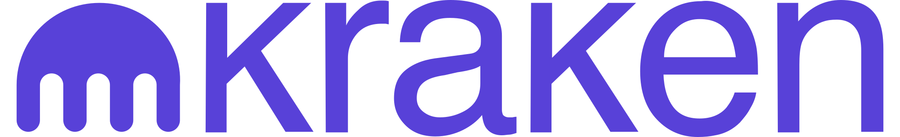
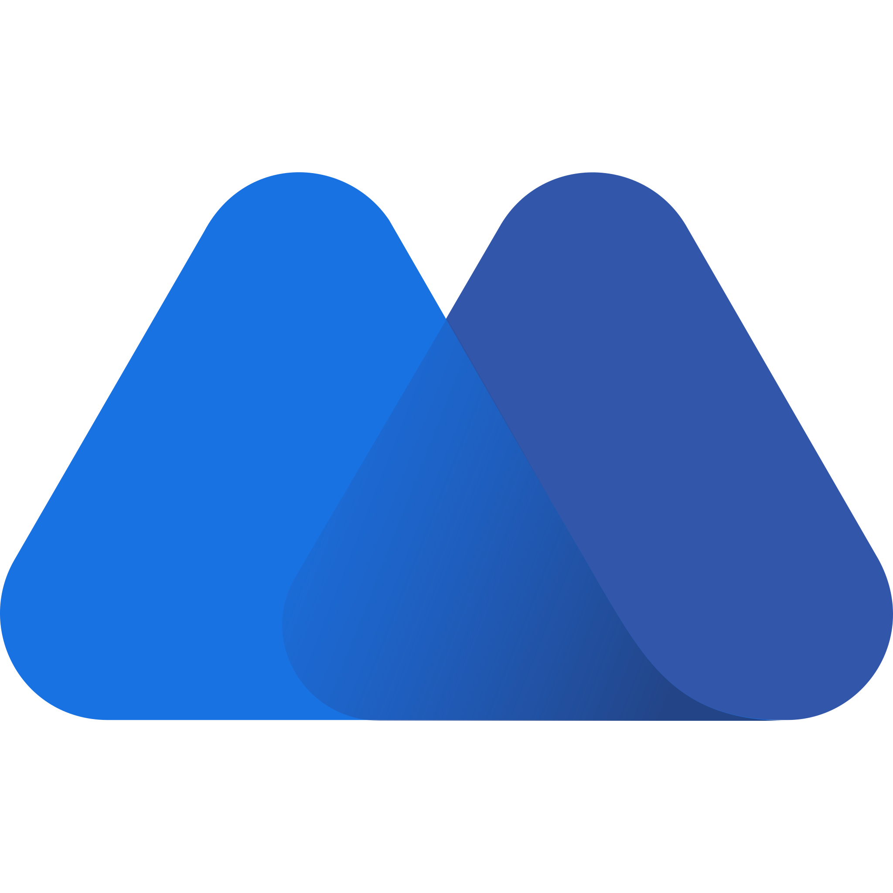

Häufige Fragen (FAQ)
Ist jetzt der richtige Zeitpunkt, um einzusteigen?
Wie viel Geld brauche ich für den Einstieg?
Muss ich mich mit Technik auskennen?
Wie sicher ist Krypto?
Werde ich durch das Coaching zum Krypto-Profi?
Gibst du konkrete Kaufempfehlungen?
Wie lange dauert die Begleitung?
Findet das Coaching online oder persönlich statt?
Was passiert nach der ersten Investition?
Für wen ist das Angebot nicht geeignet?
Unsere Partner
Tangem Wallet
Kraken

Kraken ist eine der ältesten und sichersten Krypto-Börsen der Welt, gegründet 2011 in den USA. Über die Plattform können Nutzer Kryptowährungen kaufen, verkaufen, handeln und staken. Kraken ist ideal für Nutzer, die sicher und professionell mit Kryptowährungen handeln möchten – sowohl Einsteiger als auch erfahrene Trader.
MEXC

MEXC ist eine globale Krypto-Börse mit einer sehr großen Auswahl an handelbaren Coins, günstigen Gebühren und Funktionen wie Spot-, Futures-, Copy- und Demo-Trading. Sie richtet sich vor allem an aktive Trader, hat aber regulatorische Unsicherheiten und keinen direkten Fiat-Auszahlungsservice.
CoinTracking - Steuertool
CoinTracking ist eine Software zur automatischen Erfassung und Analyse von Krypto-Transaktionen. Sie zeigt dir den aktuellen Stand deines Portfolios, berechnet Gewinne und Verluste und unterstützt bei der Steuererklärung. Durch den Import von Daten aus Börsen und Wallets behältst du jederzeit den Überblick über deine Krypto-Aktivitäten.
BTC - Sparplan
21bitcoin ist eine regulierte App, mit der du Bitcoin schnell und einfach kaufen, verkaufen und verwalten kannst - dabei profitierst du von kostenfreien und sofortigen SEPA-Instant-Einzahlungen bis zu €100.000 sowie flexiblen Funktionen wie Sparplänen, Limit Orders und automatischen Wallet-Transfers ins eigene Wallet.